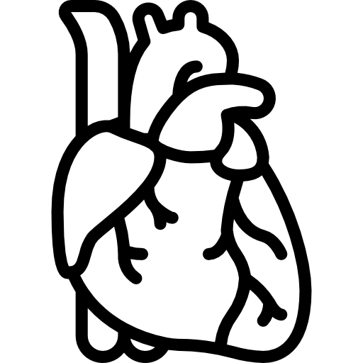

| Тревожные расстройства | Пик начала | До 14 лет | До 18 лет | До 25 лет |
|---|---|---|---|---|
| Специфическая фобия/расстройство сепарации | 5.5 | 72.4% | 75% | 80.4% |
| Социальная фобия | 14.5 | 50.9% | 79.1% | 87.5% |
| Паническое расстройство | 15.5 | 8.2% | 22.5% | 45.7% |
| Генерализованное тревожное расстройство | 15.5 | 8.6% | 20.4% | 33% |
| Депрессивное расстройство | 20.5 | 2.5% | 11.5% | 34.5% |
Что мы знаем о тревоге
Тревога - это серьезное состояние, преодоление которого требует времени и усилий человека.
Давайте обсудим тревогу, опираясь на факты и современные исследования.
Повышенный уровень тревожности может быть причиной многих заболеваний

Сердечно-сосудистые заболевания
Проблемы с желудочно-кишечным трактом
Расстройства сна
Проблемы с дыхательной системой
Ослабление иммунной системы

Психические расстройства
Стадии тревоги - это условное деление тревожных состояний по уровням интентивности и влияния на жизнь. Хотя строгой классификации нет, выделяют уровни, помогающие понять её проявления и развитие.
Легкая тревога
Это начальная стадия, когда человек испытывает незначительное беспокойство или нервозность. Такие чувства могут возникать в ответ на стрессовые или новые ситуации и часто исчезают сами по себе. На этом уровне тревога не оказывает значительного влияния на повседневную жизнь.
Умеренная тревога
Тревога становится более заметной и начинает мешать концентрации и выполнению повседневных задач. Человек может испытывать напряжение и беспокойство, которые не проходят самостоятельно. На этом этапе важно начать использовать стратегии самопомощи, чтобы предотвратить усугубление состояния.
Высокий уровень тревоги
Тревога серьезно влияет на качество жизни, вызывая физические симптомы, такие как учащенное сердцебиение, потливость, головокружение и другие. В повседневной жизни могут возникать трудности на работе, в учебе или личных отношениях. На этом уровне рекомендуется обратиться за профессиональной помощью.
Генерализованная тревожность
Это более тяжелые формы тревоги, которые могут включать панические атаки или постоянное, не связанное с конкретными ситуациями, беспокойство. Эти состояния требуют комплексного лечения, включая терапию и, возможно, медикаментозное вмешательство.